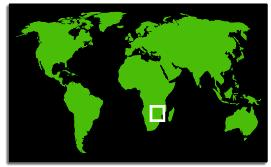

Lost Civilizations
of Africa and Eurasia


Dr. Ruben Mendoza
California State University Monterey Bay
Spring, 1999
Tuesdays, 5:00-7:50 p.m., Building 15, Rm. 122
SBSC 383, Sec. 1, 4 Credits
SBSC 283A, Sec. 1, Reg. Code: 24452, 4 Credits
Description
Readings
Deliverables
Schedule
Outcomes
Assessment
Student Reports
Online Journal
Africa
W3
|
African Civilizations
The
intent of this quiz is to provide a preliminary assessment of where you
stand with your knowledge of where the primary ancient civilizations of
Africa were originally located.
th
Quiz One: Africa and Its Civilizations
|
|
Self Test: Trade
|
|
|
| 1) In Sudanic Africa, trade |
|
|
| 2) The desert-edge zone just to the north
and south of the Sahara was known as the |
|
|
| 3) Which of the following statements about
trade in Africa is most accurate? |
|
|
| 4) In trans-Saharan commerce, which of the
following metals was probably not as important a trade item as the
others listed below? |
|
|
| 5) Around ca. A.D. 1100, trade began to work
to the advantage of states forming in the |
|
|
| 6) Within trading networks, |
|
|
| 7) In the world of the "desert-edge," |
|
|
| 8) The "ideology of protection" operating
in Saharan and Sudanic regions meant that |
|
|
| 9) The ___________ were the chief group of
peoples controlling the trans-Saharan trade. |
|
|
| 10) The biggest rival trading networks across
the Sahara were based in |
|
|
|
|
|
|
|